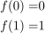
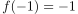
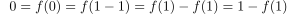
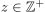
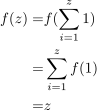

Starrheit der ganzen Zahlen (Ring)
1. Satz
Die Ganze Zahlen besitzen keinen nichttrivialen Ringautomorphismus.
2. Beweis
Sei  ein Automorphismus.
Nach Annahme gilt:
ein Automorphismus.
Nach Annahme gilt:

1
Daraus folgt auch  wegen  (vgl. Abbildung der neutralen Elmenet) Daraus folgt durch Induktion für 

2
Analog für